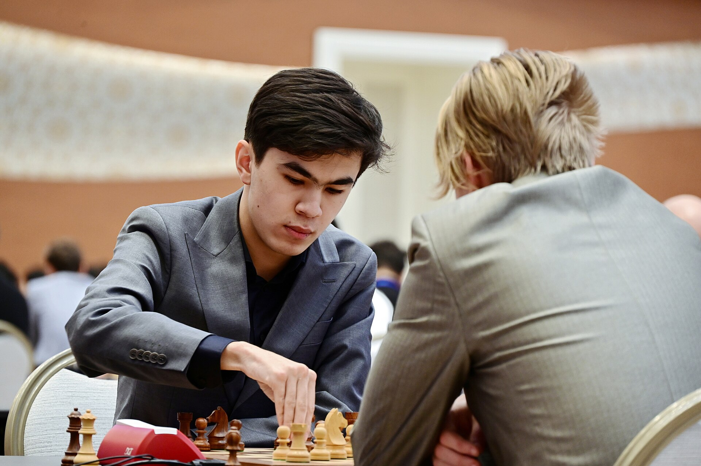

Javohir Sindorov FIDE tarixidagi ilk «Eng yaxshi erkak shaxmatchi» mukofotini oldi
20 yoshli oʻzbek grossmeysteri FIDE Excellence Awards 2026 doirasida «Best Chess Player — Male» nominatsiyasi gʻolibi boʻldi; mukofot 27-sentabrda Samarqandda topshirildi.

Oʻzbekiston grossmeysteri Javohir Sindorov FIDE Excellence Awards 2026 doirasida «Best Chess Player — Male» (eng yaxshi erkak shaxmatchi) nominatsiyasi gʻolibi boʻldi. U mukofotni 27-sentabrda Samarqandda, 46-shaxmat olimpiadasi yopilish marosimida qabul qildi.
Ilk mukofot sohibi
FIDE Excellence Awards shu yili taʼsis etilgan va har ikki yilda beriladi. Mukofot 2024-yil sentabridan 2026-yil avgustigacha boʻlgan olimpiya siklidagi yutuqlar uchun taqdim etiladi. Sindorov — ushbu nominatsiyaning birinchi sohibi.
Sindorovning yutuqlari
2025-yilda Sindorov Jahon kubogini qoʻlga kiritdi va turnir tarixidagi eng yosh gʻolib boʻldi. 2026-yil aprelida u Pretendentlar turnirini bir tur qolganda yakunlab, jahon chempionligi unvoni uchun Gukesh Dommaraju bilan uchrashish huquqini qoʻlga kiritdi. Shu davrda reytingi qariyb 100 punktga oshib, u dunyoning eng kuchli toʻrtligiga kirdi.
Samarqanddagi olimpiadada Sindorov Oʻzbekiston terma jamoasi bilan chempion boʻldi; ikkinchi taxtada 10 oʻyinda 7 ochko toʻplab (5 gʻalaba, 4 durang, 1 magʻlubiyat), 2797 samaradorlik reytingi bilan individual bronza medalini qoʻlga kiritdi. Nominatsiyada Magnus Karlsen, Fabiano Karuana, Gukesh Dommaraju, Nodirbek Abdusattorov kabi shaxmatchilar ham boʻlgan.